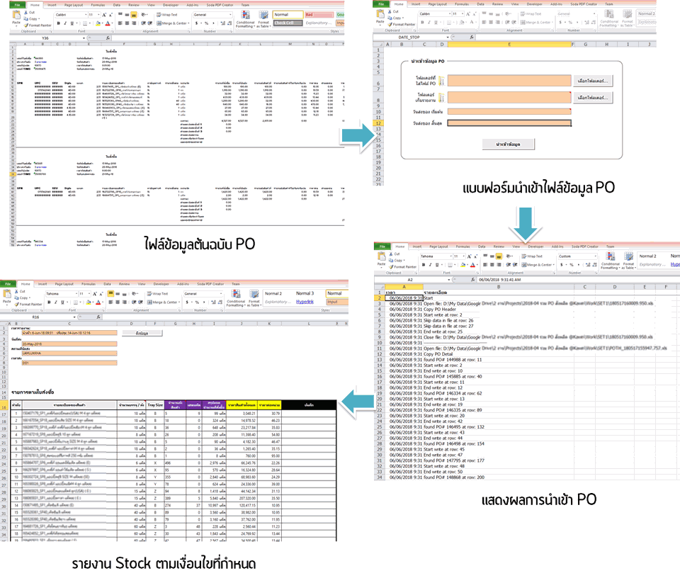
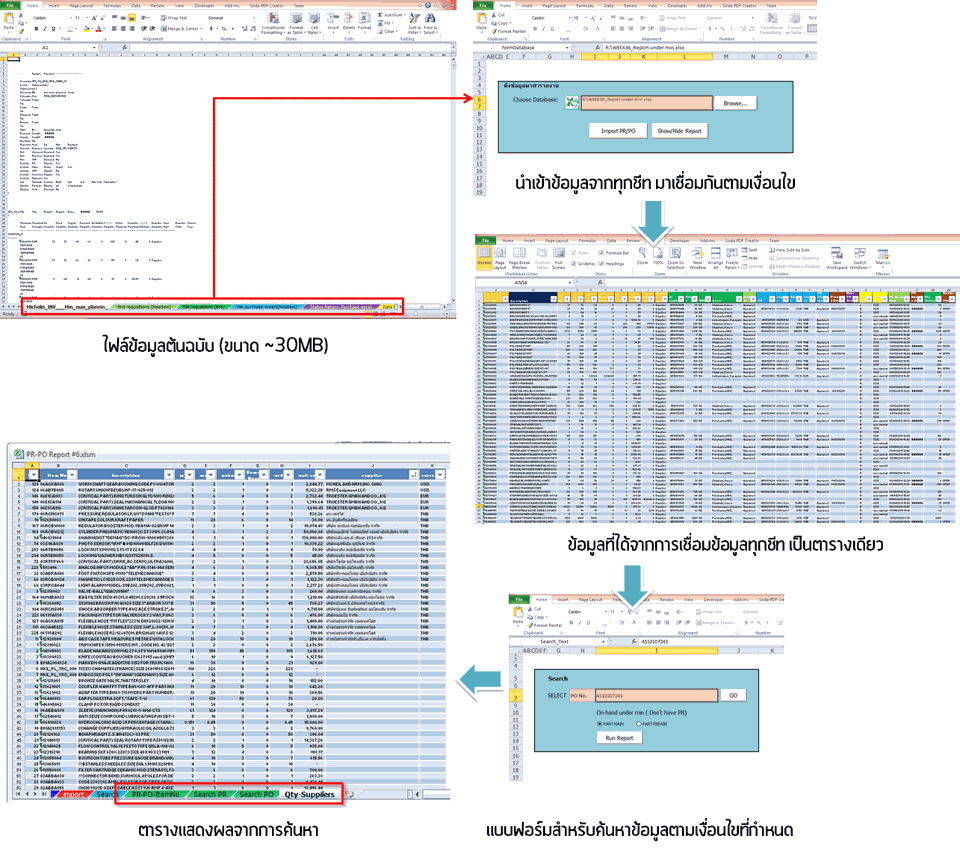
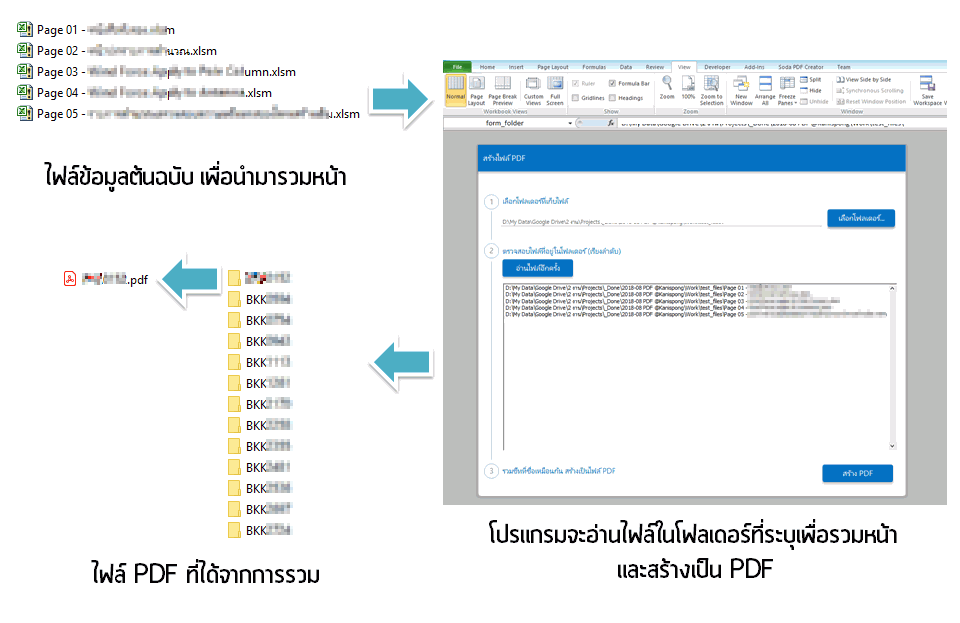
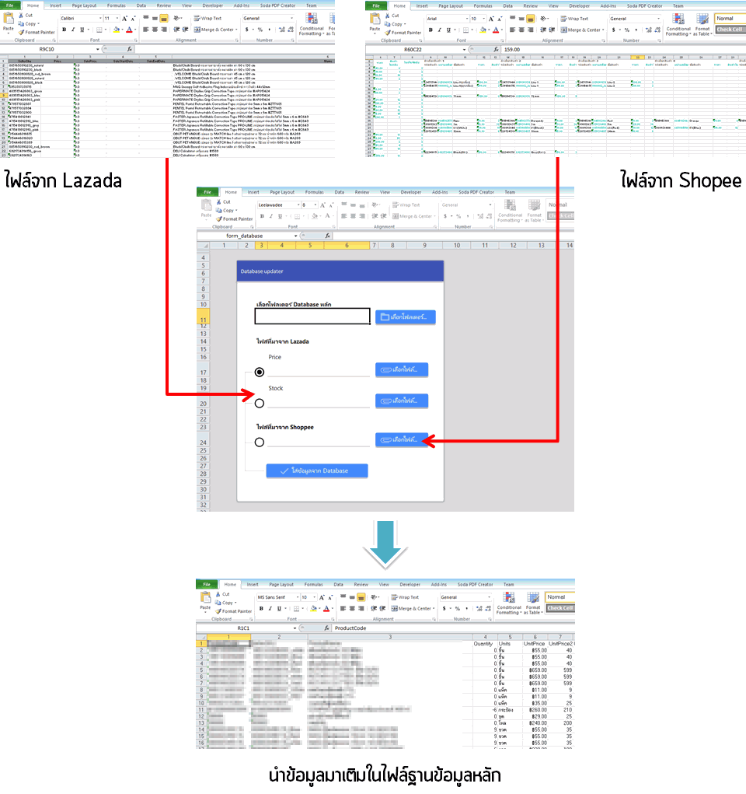

Portfolio งานที่เคยทำ
แบบฟอร์มสร้างใบเสนอราคา
- ปี พ.ศ. 2561
- รายละเอียดงาน: ออกแบบแบบฟอร์มสำหรับกรอกข้อมูลลูกค้าประกันภัย และนำข้อมูลที่ได้มาสร้างใบเสนอราคา ภาษาไทย/อังกฤษ
นำเข้าไฟล์ข้อมูล PO และสร้างรายงานสำหรับฝ่ายผลิต
- ปี พ.ศ. 2561
- รายละเอียดงาน: โปรแกรมจะนำเอาข้อมูลจากไฟล์ PO มาแปลงให้อยู่ในรูปแบบตาราง เพื่อสร้างใบรายการสำหรับฝ่ายผลิตเพื่อไปผลิตสินค้าตามใบ PO

สร้างใบ DO จากตารางข้อมูล
- ปี พ.ศ. 2561
- รายละเอียดงาน: ผู้ใช้งานจะ Copy ตารางข้อมูลสำหรับออกใบ DO จากเว็บไซต์ ระบุข้อมูลหัว DO ในแบบฟอร์ม จากนั้นโปรแกรมจะเอาข้อมูลส่วนหัว และรายละเอียดจากตารางมาสร้าง DO ชีทละ 1 ใบ เพื่อให้ผู้ใช้งานสามารถพิมพ์ออกกระดาษ
โปรแกรมนำเข้าข้อมูลจากหลายตารางมาสร้างรายงาน
- ปี พ.ศ. 2561
- รายละเอียดงาน: โปรแกรมจะนำข้อมูลดิบจากไฟล์ที่ส่งออกมาจาก Database โดยจะเอาทุกชีทมา INNER JOIN ตามคอลัมน์ที่ผูกเอาไว้ และจะคัดมาเฉพาะคอลัมน์ที่สนใจ เพื่อนำเอามาสร้างเป็นตาราง จะมีแบบฟอร์มให้ผู้ใช้งาน Query ข้อมูลที่สนใจออกมาเป็นรายงานได้

นำเข้าข้อมูล Text file มาจับคู่กับ Master Data
- ปี พ.ศ. 2561
- รายละเอียดงาน: โปรแกรมจะอ่าน Text file ที่เป็นข้อมูลจาก vendor นำเอามาเทียบกับข้อมูล Master Data จะคัดมาเฉพาะข้อมูลที่ตรงกันเท่านั้น โดยผู้ใช้งานสามารถกำหนดอัตราความผิดเพี้ยนของข้อมูลได้ เพื่อให้รองรับการสะกดคำที่ไม่ตรงกัน
รวมไฟล์เพื่อสร้าง PDF อัตโนมัติ
- ปี พ.ศ. 2561
- รายละเอียดงาน: โปรแกรมจะรวมไฟล์ Excel ที่มีข้อมูลเป็น 1 ไฟล์ / หน้า โดยใน 1 ไฟล์จะมีข้อมูลที่ได้มาจากหลายไซต์ โดยจะรวมหน้า 1 ถึงหน้าสุดท้าย โดยแยกตามไซต์ และสร้างออกมาเป็นโฟลเดอร์สำหรับแต่ละไฟล์ PDF

โปรแกรมรวมข้อมูลจากแบบฟอร์มมาไว้ในตาราง
- ปี พ.ศ. 2561
- รายละเอียดงาน: โปรแกรมรวมข้อมูลจากแบบฟอร์มที่เป็นไฟล์ Excel โดยจะรวมทุกไฟล์ตามที่ระบุไว้ในโฟลเดอร์ แล้วเอามารวมกันไว้ในตารางเดียวกัน
นำเข้าข้อมูลจากไฟล์ที่ Export มาจากเว็บไซต์ มากรอกใน Database
- ปี พ.ศ. 2561
- รายละเอียดงาน: นำเข้าข้อมูลที่ Export มาจากเว็บไซต์ Lazada และ Shopee เพื่อนำเอาคอลัมน์ที่สนใจมากรอกลงในไฟล์ Database ตามที่ระบุ

โปรแกรมสร้างใบสลิปเงินเดือน
- ปี พ.ศ. 2561
- รายละเอียดงาน: โปรแกรมจะมีตารางให้กรอกรายละเอียดของพนักงาน รายได้และรายจ่าย เมื่อกดปุ่มจะนำเอาข้อมูลในตารางมาสร้างใบสลิปเงินเดือน โดยสร้างตามจำนวนพนักงานในตารางจนครบ
โปรแกรมรวมเวลาสแกนนิ้วเข้างาน
- ปี พ.ศ. 2561
- รายละเอียดงาน: นำเข้าข้อมูลสแกนนิ้วของพนักงานจากเครื่อง นำเอามารวมกัน (หลายสาขา) จากนั้นสร้างเป็น Pivot Table ของแต่ละคน เพื่อคำนวณเวลาเข้าออกงาน และนำข้อมูลดังกล่าวมาคิดเป็นจำนวนเงินตามเงื่อนไขต่าง ๆ เช่น วันหยุด วันลา
โปรแกรมจัดการสินค้าในคลัง
- ปี พ.ศ. 2561
- รายละเอียดงาน: โปรแกรมจะนำเข้าข้อมูลสินค้าเข้าคลัง นำมารวมไว้ในตารางเดียวกัน ในตารางจะมีปุ่มคำสั่งให้นำเอาข้อมูลออกไปใช้งาน ได้แก่ ออกใบเช็คสิ่งของ ออกอินวอย เป็นต้น โดยข้อมูลลูกค้าจะเชื่อมต่อนำเข้ามาจากไฟล์ Master Data ที่ส่งออกมาจากระบบ

สร้างอีเมลใน GMail เพื่อส่ง Appointment หาลูกค้า
- ปี พ.ศ. 2561
- รายละเอียดงาน: โปรแกรมจะดึงข้อมูลอีเมลลูกค้า เพื่อใช้สำหรับส่งอีเมล โดยโปรแกรมจะมีแบบฟอร์มให้สร้าง Appointment ในส่วนของการสร้างอีเมลจะใช้ภาษา php เป็นตัวส่งอีเมลผ่าน IMAP protocol
โปรแกรมแยกข้อมูลเพื่อสร้างรายงาน 5 แบบ
- ปี พ.ศ. 2557
- รายละเอียดงาน: โปรแกรมจะนำเข้าข้อมูลดิบสำหรับทำรายงาน จากนั้นจะเอามาแยกสรุปออกมาเป็นรายงานทั้ง 5 แบบ
แบบฟอร์มสำหรับประเมินและรับแลกรถยนต์
- ปี พ.ศ. 2557
- รายละเอียดงาน: ในไฟล์จะมีแบบฟอร์ม 2 ชีท ใช้สำหรับกรอกข้อมูลสำหรับแลกเปลี่ยนรถยนต์ โดยจะช่วยประมวลและอำนวยความสำดวกของ Droplist ตัวเลือกยี่ห้อและรุ่น ฯลฯ เพื่อให้เป็นมาตราฐานเดียวกันทุกคน ข้อมูลที่กรอก จะถูกดึงมาสร้างเป็นรายงานจำนวน 5 รายงาน เพื่อดูสรุปตามด้านต่าง ๆ

นำเข้าข้อมูลเพื่อสร้างเป็น Graph และ Pivot Table
- ปี พ.ศ. 2557
- รายละเอียดงาน: นำเข้าข้อมูล Master Report เพื่อนำเอาไว้สร้างเป็น Graph และ Privot Table
โปรแกรมช่วยกรอกข้อมูล Stock สินค้า
- ปี พ.ศ. 2556
- รายละเอียดงาน: โปรแกรมจะใช้ข้อมูล Stock สินค้าที่ได้มากจากโปรแกรม ERP เพื่อนำมากรอกลงในแบบฟอร์มสำหรับจัดส่งสินค้า โดยจะมีการคำนวณจำนวนกล่องในการส่งตามประเภทสินค้า
โปรแกรมทำ Special Order เพื่อนำเข้าระบบ ECC
- ปี พ.ศ. 2556
- รายละเอียดงาน: โปรแกรมจะนำเอาข้อมูลต้นฉบับจากรายงานที่เป็นแบบฟอร์มกรอก Stock นำเอามาแปลงในรูปแบบ Text file โดยเรียงคอลัมน์ตามที่กำหนดแล้วบันทึกเป็น *.txt ในโฟลเดอร์เพื่อใช้สำหรับ Upload
โปรแกรมแปลง CSV เป็นตารางและ Pivot Table
- ปี พ.ศ. 2556
- รายละเอียดงาน: นำเข้าข้อมูลที่เป็นไฟล์ CSV นำข้อมูลขนาดและน้ำหนักมารวมเป็นตาราง เพื่อใช้สร้างรายงานที่เป็นตารางสรุปผล และ Pivot Table เพื่อใช้ดูข้อมูลสินค้า
โปรแกรมคำนวณจุดต่อสายสัญญาณ
- ปี พ.ศ. 2555
- รายละเอียดงาน: โปรแกรมจะอ่านข้อมูลจากตารางในไฟล์ จากนั้นจะคำนวณจุดเชื่อมต่อสำหรับสายสัญญาณและกรอกลงในตาราง
โปรแกรมกรอกข้อมูลในแบบฟอร์ม Evaluation
- ปี พ.ศ. 2555
- รายละเอียดงาน: นำเข้าข้อมูล Audit จำนวน 4 ชีท แต่ละชีทมีข้อมูลในแต่ละด้านที่ระบุผลการ Audit โปรแกรมจะแปลงข้อมูลตามเงื่อนไขที่กำหนดไว้ แล้วนำไปกรอกในแบบฟอร์มรายงาน
แปลงชื่อไฟล์ภาพถ่ายใบเสร็จเป็นข้อมูลในตาราง
- ปี พ.ศ. 2555
- รายละเอียดงาน: ผู้ใช้งานจะเอาภาพถ่ายใบเสร็จรับเงิน/ใบกำกับภาษี ที่ทางคนถ่ายรูปได้เปลี่ยนชื่อไฟล์ตามลำดับและจำนวนเงิน โปรแกรมจะไล่อ่านไฟล์ทั้งหมดในโฟลเดอร์ และแยกตัวเลขจากชื่อไฟล์มากรอกในตาราง ผู้ใช้งานสามารถคลิกเพื่อดูภาพใบเสร็จ/ใบกำกับภาษี เพื่อตรวจสอบได้
โปรแกรมจัดการบิลและ Stock สินค้า
- ปี พ.ศ. 2555
- รายละเอียดงาน: โปรแกรมจะมีแบบฟอร์มให้สร้างใบเสนอราคา/อินวอย ใบเสร็จรับเงิน ใบรับของเข้า Stock ข้อมูลสินค้าจะถูกเก็บไว้ในตาราง Stock จาก โปรแกรมจะมีปุ่มให้กดจัดการสินค้าได้แก่ ขายของ รับของได้ ผู้ใช้สามารถสร้างแบบพิมพ์ใบอินวอย ใบเสนอราคา และใบเสร็จรับเงินได้
รวมไฟล์ข้อมูลเพื่อสร้างรายงาน
- ปี พ.ศ. 2555
- รายละเอียดงาน: โปรแกรมจะรวมไฟล์จากไฟล์ 3 ไฟล์ เพื่อนำเอามาสร้างเป็นรายงานสรุป
แบบฟอร์มสำหรับเก็บข้อมูล Stock
- ปี พ.ศ. 2555
- รายละเอียดงาน: ผู้ใช้จะสามารถใส่ข้อมูล/แก้ไข รายการสินค้าในแบบฟอร์ม โดยจะมีปุ่มด้านบนให้กดเพิ่มรายการใหม่ มีชีทสำหร้ับรายงานเตือนสินค้าเหลือจำนวนน้อยกว่า Min Stock